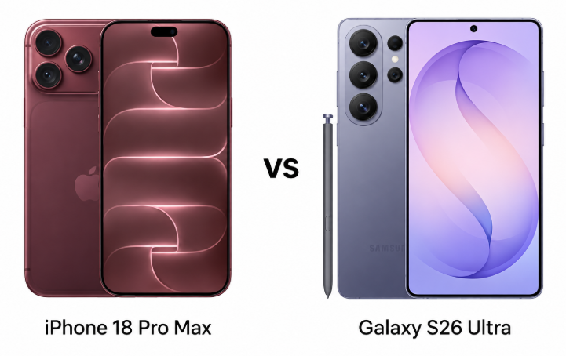
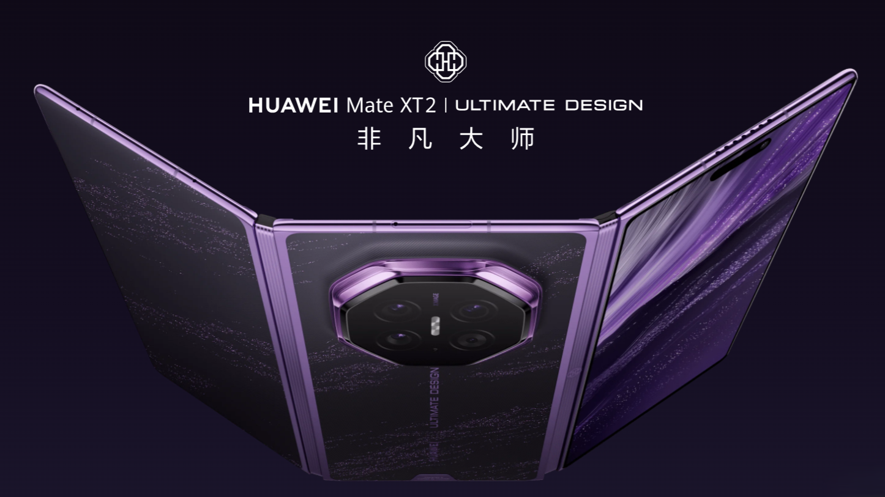
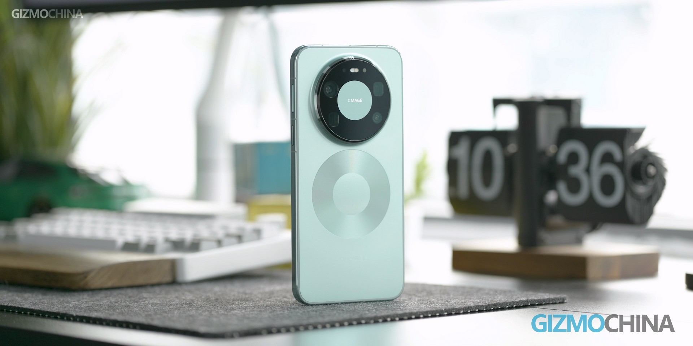
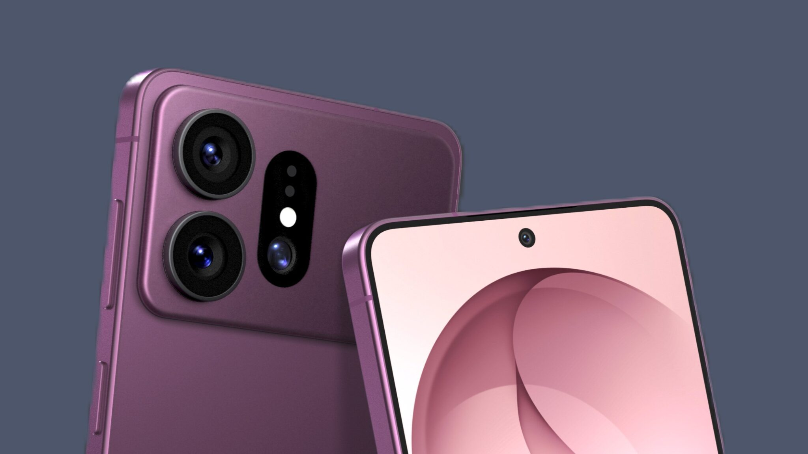
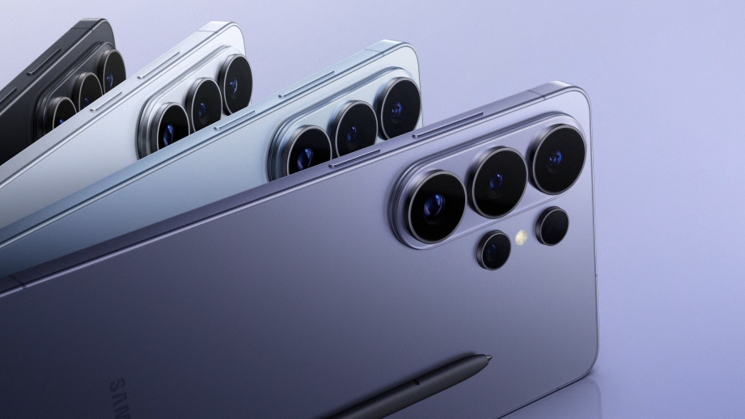

THE TECH EDIT
기술의 변화, 매일 한눈에.
카메라 · 스마트폰 · AI, 해외 테크 소식을 모아 전합니다.
최근 발행2026-09-16
새로 들어온 소식
LATEST STORIES최신 뉴스
전체 3,009개 기사도요타, 신규 특허 출원: 시선이 닿는 곳을 차량 카메라가 촬영
18,999위안부터: Sony FE 400mm F4.5 / 600mm F6.3 GM OSS, 가장 가벼운 초망원 단렌즈 출시
Samsung, Apple iPhone 사용자에게 Galaxy로 전환하도록 설득하는 새 광고 공개
Samsung Galaxy Z TriFold 2, 경량화 및 내구성 업그레이드에 중점, 시작 가격은 2899달러 유지될 전망
Samsung, Exynos 1610 프로세서 탑재 Galaxy A18 4G 스마트폰 출시
Qualcomm, Nubia NaviX Ultra 스마트폰에 5세대 스냅드래곤 8 엘리트 모바일 플랫폼 탑재 공식 발표
[IT즈자 개봉기] OPPO Find X10 Pro Max 라이트 티타늄 에디션: 하셀블라드 카메라의 감성을 스마트폰에 담다
OPPO Find X10 Pro Max 스마트폰, Dimensity 9600 Pro 플래그십 칩 최초 탑재
OPPO Find X10 Pro Max 스마트폰, Dimensity 9600 Pro 칩 탑재 공식 발표
OPPO F35 Pro 스마트폰 공개: 물결무늬 등 3가지 색상, 10000mAh 배터리 예상
새 CEO 테르누스, 2026 에미상 시상식 참석해 Apple 첫 폴더블 아이폰 듀오 공개
MediaTek, 6년 연속 글로벌 스마트폰 SoC 시장 점유율 1위 달성 공식 발표
MediaTek Dimensity 9600 Pro 프로세서, TSMC 최신 2nm 공정 채택, LPDDR6 메모리, UFS 5.0 플래시 메모리 지원

아이폰 18 프로 맥스 vs 갤럭시 S26 울트라: 삼성에 큰 이점 있어

화웨이 메이트 XT2 수입 가격 5,000유로 돌파, 애플 아이폰 듀오보다 훨씬 비싸

화웨이 메이트 90 시리즈, 출시 전 디스플레이, 칩, 카메라 상세 정보 유출
Honor MagicOS 11 시스템 업그레이드 계획 발표, Magic5 시리즈 스마트폰 등 포함 확정
Glass Imaging, OpenAI에 인수: 전 Apple 직원 창업, 이미지 기술은 Honor 스마트폰에 이미 적용

갤럭시 S27 울트라, S27 프로, 아이폰 18 프로 및 iQOO 16에 이어 드디어 M16 OLED 패널 탑재

갤럭시 S26 울트라, 아이폰 17에 대한 애플의 움직임에 따라 곧 가격 인상될 수도
공업정보화부, 국가발전개혁위원회: "제15차 5개년 계획"에서 첨단 공정 능력 향상, 하이엔드 스마트폰 핵심 칩 및 PC 고성능 칩 개발, 오픈소스 HarmonyOS 등 국산 운영체제 탑재 강화
검색 결과가 없습니다
다른 검색어를 입력하거나 필터를 초기화해 보세요.